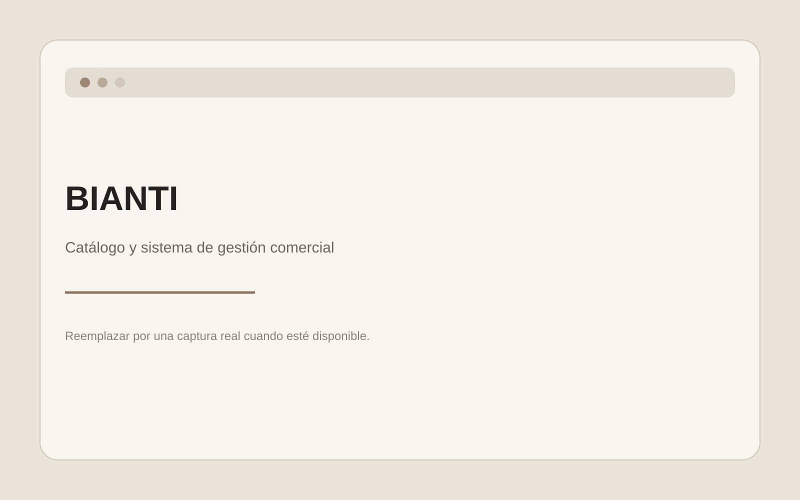

Sistema de gestión comercial y catálogo digital
01
BIANTI
Proyecto desarrollado para acompañar la gestión de un emprendimiento comercial. El sistema reúne herramientas para productos, categorías, stock, precios, ventas, pedidos, clientes, ofertas y otras tareas administrativas.
Mi aporte
Participé en el análisis de las necesidades del negocio, definición de funcionalidades, organización del desarrollo, revisión de interfaces, pruebas, detección de errores y mejoras del sistema.